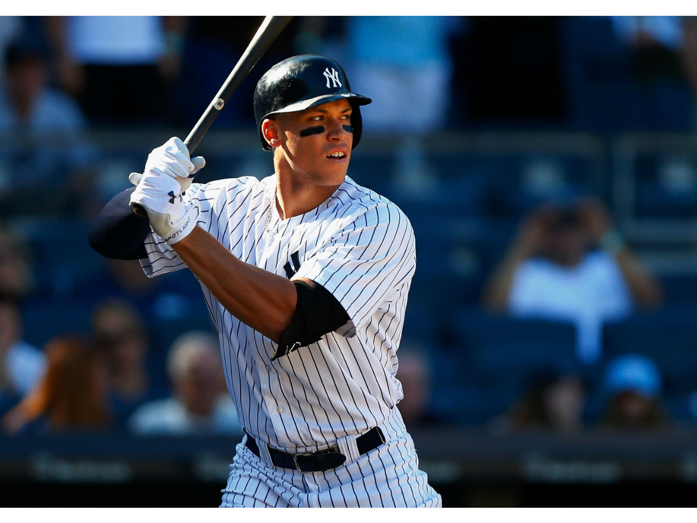

I like playing baseball a lot because I am really good at it and it is a lot of fun to spend time with my teammates. My favorite baseball team is the New York Yankees, and i really hate the Red Sox and Phillies. My favorite parts of baseball are hitting and pitching.My least favorite part is when the weather is really bad and games get cancelled, or if I have to play and it is really cold or rainy outside.
Playing video games is a fun hobby because i really like it and i am addicted.

I like listening to music really loudly because it disconnects me from the world.